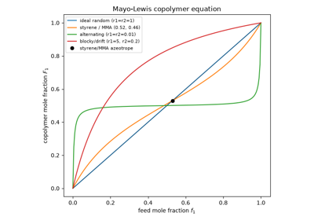
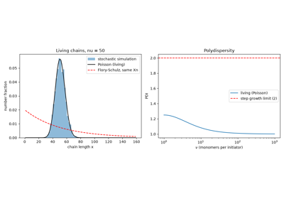
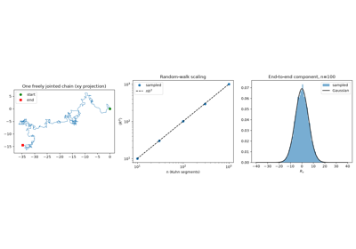
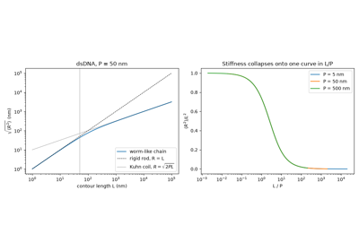
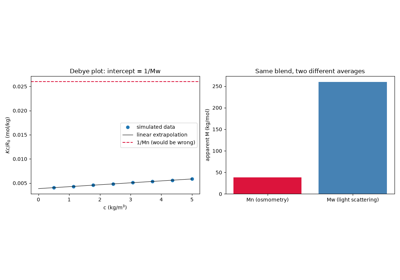
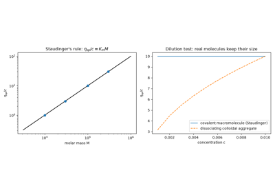
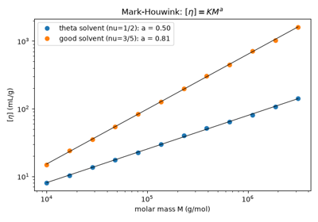
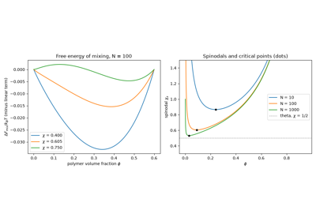
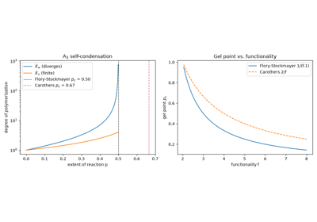
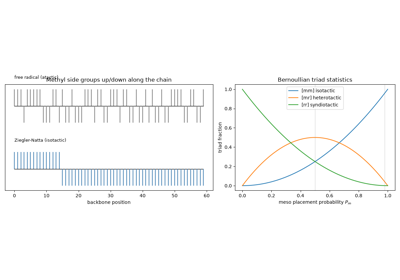

Examples#
This gallery walks through every public feature of
chemistrykit.polymer: ideal random-walk chain statistics and the
Flory exponent for real chains under different solvent conditions;
molecular-weight-distribution statistics and the closed-form Flory-Schulz
distribution; step-growth kinetics via the Carothers equation; and
chain-growth/free-radical polymerization kinetics built on
chemistrykit.kinetics’s reaction-network engine.
Each script in this gallery is self-contained and can be run directly
with python examples/polymer/<section>/<script>.py. Every script
also carries an RST module docstring as its title/description and uses
# %% markers to split narrative text from code, which is exactly what
Sphinx-Gallery renders into the pages below – the script is the source
of truth for what you see, not a copy of it.
Sections#
chain_statistics – ideal-chain end-to-end distance and radius of gyration, and the Flory-exponent scaling of real chains under theta/good/poor solvent conditions; sampled freely jointed chains and the Kratky-Porod worm-like chain.
molecular_weight_distribution – Mn/Mw/PDI, and the closed-form Flory-Schulz (most-probable) chain-length distribution, cross-checked by direct numerical summation; Debye light scattering vs. osmometry.
step_growth – the Carothers equation relating degree of polymerization to extent of reaction, plain and with a stoichiometric imbalance; Flory-Stockmayer gelation.
chain_growth – free-radical initiation/propagation/termination kinetics, integrated numerically and checked against the steady-state approximation’s closed form; combination vs. disproportionation; the Mayo-Lewis copolymer equation; and Szwarc’s living polymerization.
solution_properties – Staudinger’s viscosity rule, the Mark-Houwink equation, and Flory-Huggins solution thermodynamics.
stereochemistry – Ziegler-Natta stereocontrol and Bernoullian tacticity statistics.
Chain-growth kinetics#
Free-radical initiation/propagation/termination kinetics, built on chemistrykit.kinetics’s reaction-network engine and integrated numerically, checked against the closed-form steady-state approximation. Also combination vs. disproportionation termination, and the factor-of-two difference in degree of polymerization it produces for the same kinetic chain length.
Also the Mayo-Lewis copolymer equation and the Poisson distribution of Szwarc’s living polymerization.

Flory’s steady-state kinetics of free-radical polymerization


The Mayo-Lewis copolymer equation: composition vs. feed

Szwarc’s living polymerization: the narrow Poisson distribution
Chain statistics#
Ideal random-walk chain statistics (exact end-to-end distance and radius of gyration) and the Flory-exponent scaling of real chains under theta/good/poor solvent conditions.
Also sampled freely jointed (Kuhn) chains and the Kratky-Porod worm-like chain.

Flory’s solvent-quality exponents: ideal vs. real chain scaling

Flory’s mean-field exponent vs. the renormalization-group value

Kuhn’s random-walk chain: sampled freely jointed chains

Kratky-Porod worm-like chain: from rigid rod to random coil
Molecular-weight distribution#
Mn/Mw/PDI summary statistics, and the closed-form Flory-Schulz (most-probable) chain-length distribution for an ideal step-growth polymerization, with its PDI approaching exactly 2 at full conversion.
Also Debye light scattering (Mw) vs. osmometry (Mn).


Debye light scattering measures Mw; osmometry measures Mn
Solution properties#
Dilute-solution viscosity as a molar-mass probe (Staudinger’s rule and the Mark-Houwink equation) and the Flory-Huggins lattice theory of polymer-solution thermodynamics.

Staudinger’s macromolecules: solution viscosity grows with chain length

The Mark-Houwink equation: intrinsic viscosity vs. molar mass

Flory-Huggins lattice theory: free energy of mixing and the phase diagram
Step-growth kinetics#
The Carothers equation relating the number-average degree of polymerization to the extent of reaction, and its generalization to a stoichiometric imbalance between functional groups.
Also the Flory-Stockmayer and Carothers gel points of branching polymerizations.


Flory-Stockmayer gelation: the gel point of a branching polymerization
Stereochemistry#
Tacticity of vinyl polymers: meso/racemo dyad and triad statistics contrasting stereospecific (Ziegler-Natta) and random (free-radical) monomer placement.

Ziegler-Natta stereocontrol: isotactic vs. atactic polypropylene